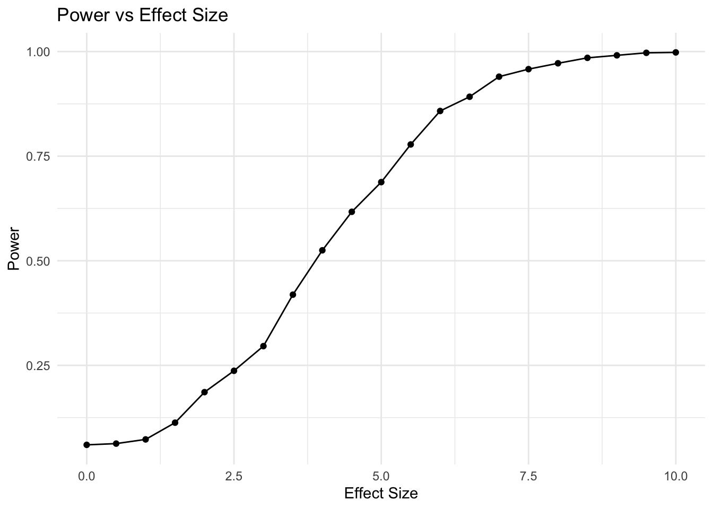

# Set seed for reproducibility
set.seed(123)
# Parameters
n_total <- 100 # Total sample size
effect_size <- 5 # True effect size (difference between means)
sd_outcome <- 10 # Standard deviation of the outcome
alpha <- 0.05 # Significance level
n_simulations <- 1000 # Number of simulationsPower Simulation for a Randomized Experiment
Power Simulation for a Randomized Experiment
In this document, we demonstrate how to conduct a power simulation for a randomized experiment with one treatment and one control group. The goal is to estimate the probability of detecting an effect of a specified size, assuming the effect exists.
Step 1: Define Parameters
First, specify the parameters for the simulation, including the total sample size, the true effect size, the standard deviation of the outcome, and the significance level.
Step 2: Run Simulations
Simulate the experiment multiple times to estimate power. For each simulation: 1. Randomly assign participants to treatment or control groups. 2. Generate outcomes based on the specified effect size and standard deviation. 3. Perform a t-test. 4. Record whether the null hypothesis is rejected.
# Initialize counter for significant results
significant_results <- 0
for (i in 1:n_simulations) {
# Random assignment
treatment <- rbinom(n_total, 1, 0.5)
# Generate outcomes
outcome <- rnorm(n_total, mean = effect_size * treatment, sd = sd_outcome)
# Perform t-test
test_result <- t.test(outcome ~ treatment)
# Check if p-value is less than alpha
if (test_result$p.value < alpha) {
significant_results <- significant_results + 1
}
}
# Estimate power
estimated_power <- significant_results / n_simulations
cat("Estimated Power:", estimated_power, "\n")Estimated Power: 0.696 Step 3: Graph of Power vs Effect Size
Create a graph showing how power changes with varying effect sizes.
library(ggplot2)
# Range of effect sizes to evaluate
effect_sizes <- seq(0, 10, by = 0.5)
# Function to calculate power for a given effect size
calculate_power <- function(effect_size, n_total, sd_outcome, alpha, n_simulations) {
significant_results <- 0
for (i in 1:n_simulations) {
treatment <- rbinom(n_total, 1, 0.5)
outcome <- rnorm(n_total, mean = effect_size * treatment, sd = sd_outcome)
test_result <- t.test(outcome ~ treatment)
if (test_result$p.value < alpha) {
significant_results <- significant_results + 1
}
}
return(significant_results / n_simulations)
}
# Calculate power for each effect size
power_results <- sapply(effect_sizes, calculate_power,
n_total = n_total, sd_outcome = sd_outcome,
alpha = alpha, n_simulations = n_simulations)
# Create a data frame for plotting
power_data <- data.frame(EffectSize = effect_sizes, Power = power_results)
# Plot the power curve
ggplot(power_data, aes(x = EffectSize, y = Power)) +
geom_line() +
geom_point() +
labs(
title = "Power vs Effect Size",
x = "Effect Size",
y = "Power"
) +
theme_minimal()
Step 4: Interpret Results
The estimated_power value represents the proportion of simulations in which the null hypothesis was rejected. This provides an estimate of the studys power given the specified parameters.
Adjustments
If the estimated power is lower than desired (commonly 0.80), consider: - Increasing the sample size (n_total). - Increasing the effect size (effect_size). - Reducing the standard deviation of the outcome (sd_outcome).
Extensions
1. Assessing Effects of Noncompliance and Attrition on Power
Noncompliance and attrition are common in real-world experiments and can reduce statistical power. Simulate these factors to assess their impact.
# Parameters for noncompliance and attrition
compliance_rate <- 0.8 # Proportion of treated participants who comply
attrition_rate <- 0.1 # Proportion of participants lost to follow-up
# Initialize counter for significant results
significant_results_nc <- 0
for (i in 1:n_simulations) {
# Random assignment
treatment <- rbinom(n_total, 1, 0.5)
# Simulate compliance
compliance <- ifelse(treatment == 1, rbinom(n_total, 1, compliance_rate), 0)
# Simulate attrition
retained <- rbinom(n_total, 1, 1 - attrition_rate)
# Generate outcomes for retained participants
outcome <- rnorm(n_total, mean = effect_size * compliance, sd = sd_outcome)
outcome <- outcome[retained == 1]
treatment <- treatment[retained == 1]
# Perform t-test
test_result <- t.test(outcome ~ treatment)
# Check if p-value is less than alpha
if (test_result$p.value < alpha) {
significant_results_nc <- significant_results_nc + 1
}
}
# Estimate power
estimated_power_nc <- significant_results_nc / n_simulations
cat("Estimated Power with Noncompliance and Attrition:", estimated_power_nc, "\n")Estimated Power with Noncompliance and Attrition: 0.486 2. Power Simulation for Factorial Designs
Factorial designs involve multiple interventions or factors. Simulate power for a 2x2 factorial design.
# Parameters for factorial design
n_total <- 200
factor1_effect <- 5
factor2_effect <- 3
interaction_effect <- 2
# Initialize counter for significant results
significant_results_fd <- 0
for (i in 1:n_simulations) {
# Random assignment to 2x2 design
factor1 <- rbinom(n_total, 1, 0.5)
factor2 <- rbinom(n_total, 1, 0.5)
# Generate outcomes
outcome <- rnorm(n_total,
mean = factor1_effect * factor1 +
factor2_effect * factor2 +
interaction_effect * factor1 * factor2,
sd = sd_outcome)
# Fit linear model
model <- lm(outcome ~ factor1 * factor2)
# Check significance of interaction
if (summary(model)$coefficients["factor1:factor2", "Pr(>|t|)"] < alpha) {
significant_results_fd <- significant_results_fd + 1
}
}
# Estimate power
estimated_power_fd <- significant_results_fd / n_simulations
cat("Estimated Power for Factorial Design:", estimated_power_fd, "\n")Estimated Power for Factorial Design: 0.105 3. Power Simulation for Clustered Randomized Controlled Trials
Clustered RCTs involve groups (e.g., schools, clinics) being randomized instead of individuals. Account for intraclass correlation (ICC) in the simulation.
# Parameters for clustered design
n_clusters <- 20 # Number of clusters
cluster_size <- 10 # Number of individuals per cluster
icc <- 0.1 # Intraclass correlation coefficient
# Initialize counter for significant results
significant_results_crt <- 0
for (i in 1:n_simulations) {
# Randomize clusters
cluster_assignment <- rbinom(n_clusters, 1, 0.5)
# Generate outcomes with ICC
cluster_effects <- rnorm(n_clusters, mean = 0, sd = sqrt(icc * sd_outcome^2))
individual_noise <- rnorm(n_clusters * cluster_size, mean = 0, sd = sqrt((1 - icc) * sd_outcome^2))
treatment <- rep(cluster_assignment, each = cluster_size)
outcome <- effect_size * treatment + rep(cluster_effects, each = cluster_size) + individual_noise
# Fit linear model accounting for clustering
cluster_id <- rep(1:n_clusters, each = cluster_size)
model <- lm(outcome ~ treatment + factor(cluster_id))
# Check if p-value for treatment is significant
if (summary(model)$coefficients["treatment", "Pr(>|t|)"] < alpha) {
significant_results_crt <- significant_results_crt + 1
}
}
# Estimate power
estimated_power_crt <- significant_results_crt / n_simulations
cat("Estimated Power for Clustered RCT:", estimated_power_crt, "\n")Estimated Power for Clustered RCT: 0.29 For more detailed examples and explanations, refer to the following resources: